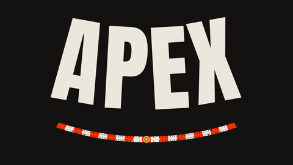
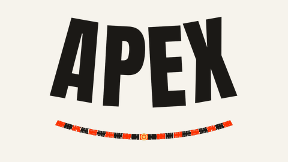

Alle StreckenAutódromo Internacional do Algarve
Portimão · Algarve · Portugal
Termine – alle Rennen in Portimão mit Startzeiten in deutscher Zeit: Superbike-WM, Formel 1, MotoGP und 3 weitere Serien.
Nächster Termin
MotoGP · 20.–22. November 2026
5 Termine aus 5 Serien · Uhrzeit = Rennstart
5 Termine aus 5 Serien
Vorläufige Kalender. Startzeiten folgen, sobald die Serien den Zeitplan veröffentlichen.
Die Sessionzeiten folgen, sobald der offizielle Zeitplan vorliegt.
Die Sessionzeiten folgen, sobald der offizielle Zeitplan vorliegt.
Die Sessionzeiten folgen, sobald der offizielle Zeitplan vorliegt.
Die Sessionzeiten folgen, sobald der offizielle Zeitplan vorliegt.
Die Sessionzeiten folgen, sobald der offizielle Zeitplan vorliegt.
Offizieller Name: Autódromo Internacional do Algarve
Das Autódromo Internacional do Algarve bei Portimão wurde im November 2008 eröffnet, als erste Weltmeisterschaft fuhr hier die Superbike-WM. 2020 gastierte erstmals die Formel 1.
Algarve International Circuit
4,653 km15 Kurven
Superbike-WM · GT World Challenge Europe · MotoGP · Moto2 · Moto3 · Formel 1
Portimão, Algarve, Portugal · 37,232° N · 8,628° WOffizielle Seite ↗Route planen ↗
Sender der Serien, die in Portimão fahren
ServusTV On zeigt die Superbike-WM kostenlos als Livestream. Eurosport überträgt seit 2026 nicht mehr.
ServusTV überträgt im Free-TV, dazu der Livestream bei ServusTV On.
Kostenlos als Livestream bei ServusTV On.
Sky Sport F1 und WOW zeigen alle Sessions live. RTL überträgt 2026 fünf Rennen frei (2025 waren es sieben).
ServusTV und ORF teilen sich die Saison und wechseln sich pro Rennen ab — komplett im Free-TV. ServusTV startet in Melbourne, der ORF zeigt das Finale.
SRF überträgt alle Qualifyings, Sprints und Rennen live.
Sky und WOW zeigen alle Rennwochenenden. DF1 und ServusTV On übertragen 12 der 22 Grands Prix kostenlos — inklusive Moto2 und Moto3.
ServusTV zeigt die komplette Saison im Free-TV.
SRF überträgt einzelne Rennen frei (SRF Info bzw. SRF zwei).
Sky und WOW zeigen alle Rennwochenenden der Motorrad-WM. DF1 und ServusTV On übertragen 12 der 22 Grands Prix kostenlos — inklusive Moto2.
ServusTV zeigt die Motorrad-WM im Free-TV, dazu der Stream bei ServusTV On.
Offizielle Partner sind Sky, der Stream ServusTV On sowie SRF, RSI und RTS.
Sky und WOW zeigen alle Rennwochenenden der Motorrad-WM. DF1 und ServusTV On übertragen 12 der 22 Grands Prix kostenlos — inklusive Moto3.
ServusTV zeigt die Motorrad-WM im Free-TV, dazu der Stream bei ServusTV On.
Offizielle Partner sind Sky, der Stream ServusTV On sowie SRF, RSI und RTS.
Alle Qualifyings und Rennen laufen als kostenloser Livestream: auf Englisch beim offiziellen YouTube-Kanal GTWorld, mit deutschem Kommentar auf der offiziellen Serienseite gt-world-challenge-europe.com.
Wie in Deutschland: kostenloser Livestream auf YouTube (GTWorld), deutscher Kommentar auf der Serienseite.
Wie in Deutschland: kostenloser Livestream auf YouTube (GTWorld), deutscher Kommentar auf der Serienseite.
Weitere Strecken mit Terminen – Entfernung in Luftlinie
Punktfarbe: Serie des nächsten Termins dort · Punkt antippen für Termine und Streckenseite
Nächster Termin
Moto2 · 20.–22. November 2026
Nächster Termin
Moto3 · 20.–22. November 2026
Nächster Termin
MotoGP · 1.–3. Oktober 2027
Nächster Termin
Moto2 · 1.–3. Oktober 2027
Nächster Termin
Moto3 · 1.–3. Oktober 2027
Nächster Termin
Neue Termine folgen, sobald die Serien ihre Kalender veröffentlichen.